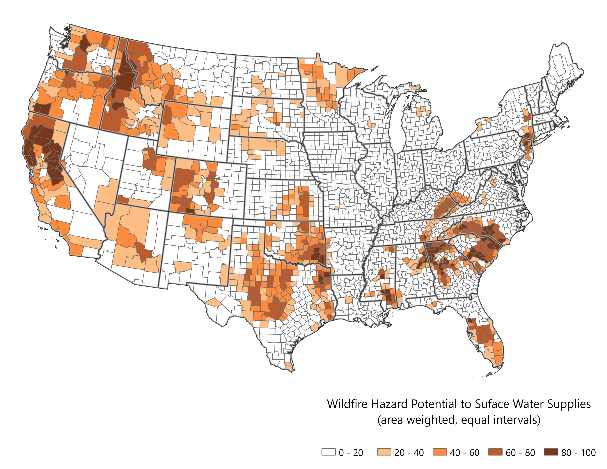
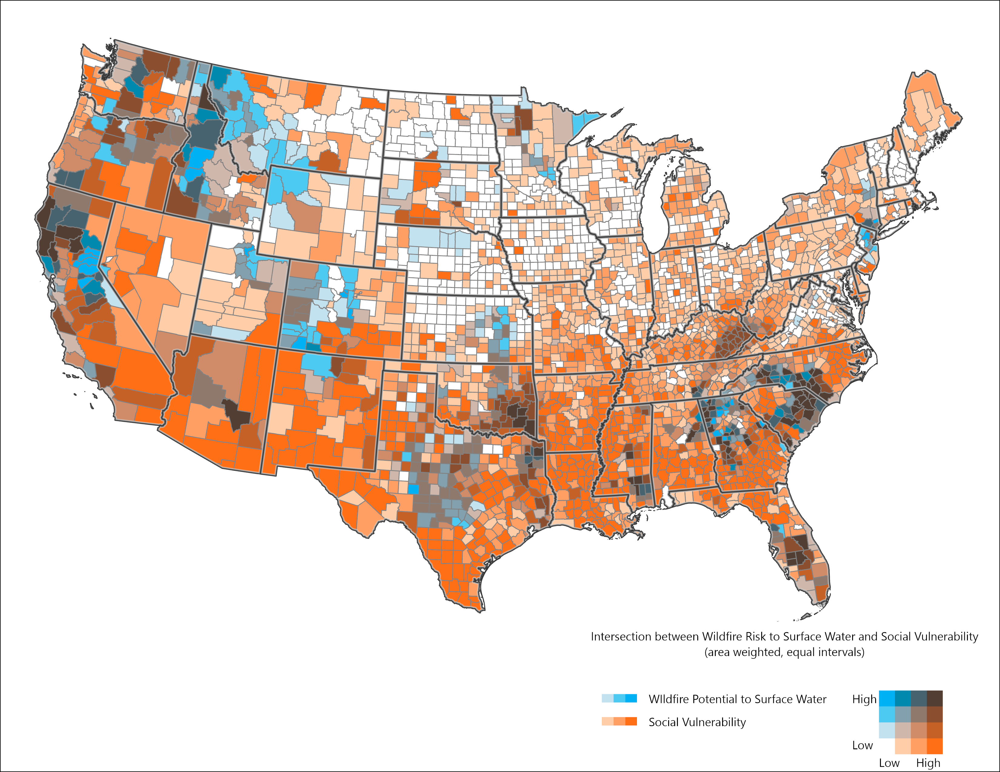

Convergence
Connecting Fire and Water
The analysis explores the connection between Wildfire Hazard Potential and surface water supplies vital for human populations. It uses data from the Forest to Faucets assessment v2.0 (Mack et al., 2022), which evaluates threats to clean water production in HUC12 watersheds across the continental U.S., considering factors like land cover, insect/disease impacts, and wildfire risk.
Specifically, the map below shows the wildfire threat to surface drinking water supplies, using the WFP_IMP_R (Relative Wildfire Risk to Important Drinking Water Watersheds) attribute in the Forest to Faucets dataset. This data was rasterized, merged with county-level data, and analyzed in R to produce weighted averages.
Fire and Water Convergence by County

.Convergence between fire, water and people
Our main interest was exploring where wildfire risk to surface-water derived drinking water and underserved populations converge. The map below brings all of this together. The bivariate map below depicts both Social Vulnerability Index and the wildfire threat to surface drinking water supplies per county.

.